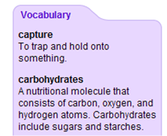

CLIPPS provides three levels of vocabulary and background support mechanisms for individual learning needs, ranging from most supportive to least supportive.
1) In-line vocabulary definitions: maximum support |
|
2) Pop-up on-demand vocabulary definitions: moderate support |
3) Sidebar vocabulary definitions: least support |
|

|
|